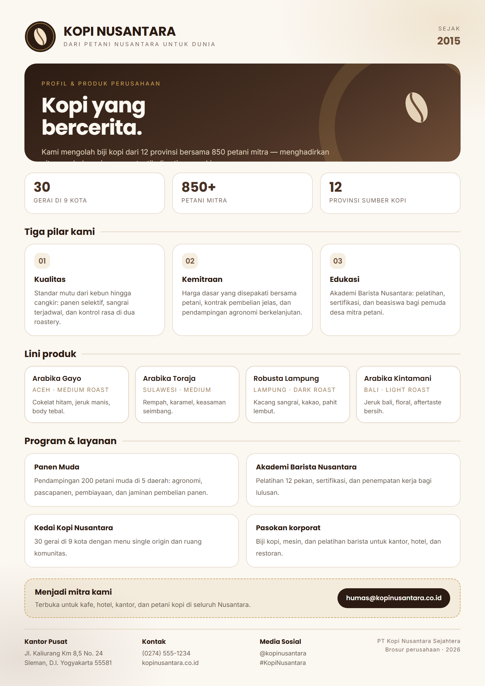
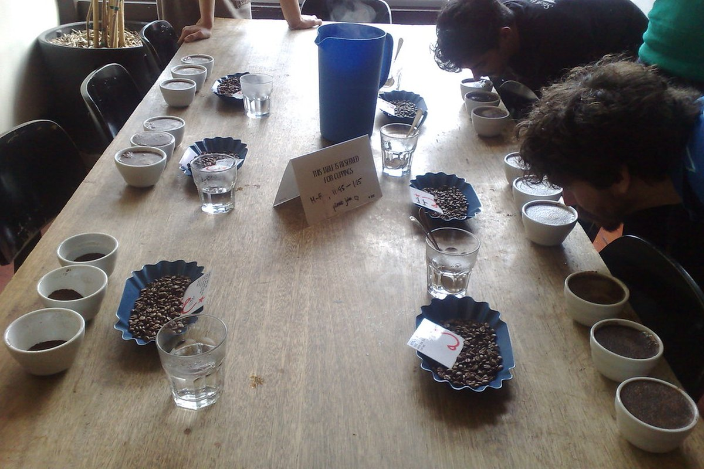

Rubrik galeri
Brosur & dokumentasi kegiatan
Materi komunikasi perusahaan: brosur resmi serta dua foto kegiatan komunikasi di lapangan.

Materi komunikasi · Brosur
Brosur perusahaan Kopi Nusantara
Brosur ini memuat profil singkat perusahaan, tiga pilar kerja (kualitas, kemitraan, edukasi), empat lini produk kopi, serta program Panen Muda dan Akademi Barista Nusantara.
Unduh brosur (PDF)Dokumentasi kegiatan komunikasi


Catatan dokumentasi
Kedua foto di atas digunakan sebagai dokumentasi kegiatan komunikasi perusahaan untuk keperluan simulasi weblog tugas akademik, dengan lisensi Creative Commons yang dicantumkan pada keterangan foto. Brosur merupakan materi desain Tugas 2 yang dipublikasikan ulang di weblog ini.
Butuh materi komunikasi lainnya?
Hubungi Humas & CSR untuk permintaan brosur cetak, foto resolusi tinggi, atau materi pers.